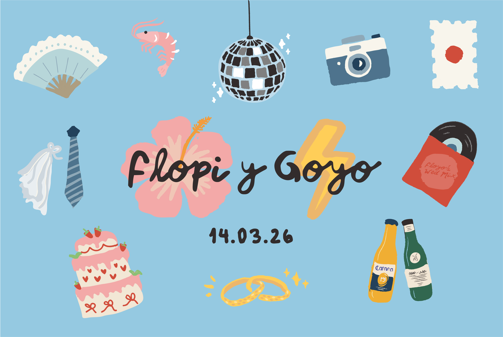
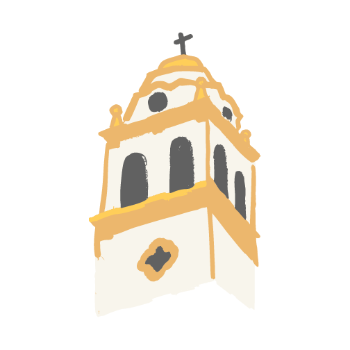
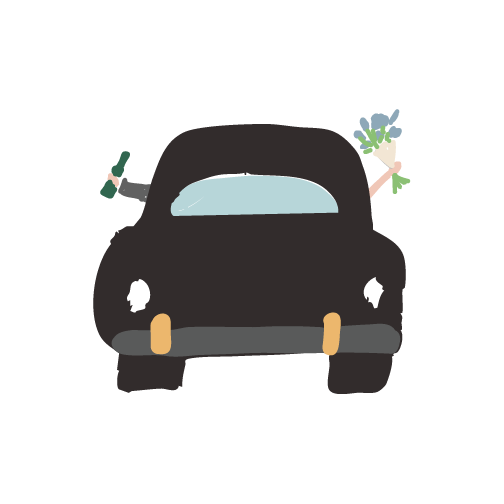

Santa Rita Darragueira 630, Boulogne 16:00 hs

Las Cortaderas J. M. Loreto 4600, Dique Luján 18:00 hs

Ese día hay Lollapalooza, acuérdense de tenerlo en cuenta por el tráfico. El mejor camino para ir a Las Cortaderas es: Panamericana Ramal Escobar y salir en Ruta 27 (Av. Benavidez).